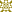

Der Verein Surrounding
Was bietet SURROUNDING für Architekten?
SURROUNDING
kombiniert die Recherche und Dokumentation von Gebäuden und Räumen.
Alle zusammmen laden Gebäude hoch und können diese zur Inspiration oder
Detailsuche verwenden.
Alle Funktionen auf einen Blick:
- nach Räumen und Stichworten suchen
- auf der Karte suchen
- Gebäude hochladen und Photos in Originalgrösse speichern
- per Drag + Drop hochladen und Metadaten automatisch übernehmen
- Bilder privat schalten
- eigene Photos als Blog bzw. Journal nach Aufnahmedatum anzeigen
- automatisches veröffentlichen auf deinem Pinterest-Board
- Druckliste erstellen, um diese als Zip-Datei herunterzuladen oder Drucklayout zu drucken
- Gebäude und Photos auf Listen sammeln, z.B. zum Drucken oder Herunterladen
- Google Earth KML Schnittstelle für unterwegs
- eigene Profilseite gestalten
- Büros: Copyrightangabe pro Photo für den Fotografen
- Büros: Schnellzugriff über surrounding.ch/meinwunschname
- Beta: Mixare Schnittstelle
Warum ist SURROUNDING kostenlos und hat keine Werbung?
SURROUNDING
ist ein gemeinnütziger Verein und hat keine kommerziellen Interessen.
Neben den vielen freiwilligen Arbeitsstunden, tragen wir den Grossteil
der Unkosten für die Gründung und Betrieb der Website privat. Wenn du
uns spenden oder helfen möchtest, schau unter
Spenden".
Wie wird die Qualität bei SURROUNDING gesichert?
Wir
akzeptieren nur Einträge von Gebäuden die existieren,existiert haben
oder bereits im Bau sind. Angaben wie die Adresse und Nutzung sind
obligatorisch. Alle Einträge werden kontienurlich von Prüfalgorithmen
auf Fehler und Verbesserungen geprüft. Alle Einträge werden von der
Redaktion geprüft und freigeschalten, falls uns da ein Fehler passiert,
bitte melde dich über den Kontakt oder am besten kannst du es selbst
nach dem Einloggen korrigieren
Wie kann ich auf die Gebäude in Google Earth oder maps.me zugreifen (kml)?
Zuerst benötigt du einen Link für Google Earth oder eine kml-Datei für maps.me :
- Öffentlich sichtbare Gebäude erhälst du mit: https://www.surrounding.ch/export/kml/
- Öffentliche + deine eigenen Gebäude stehen dir in Deinen Einstellungen unter Soziale Netzwerke
zur Verfügung.
In maps.me musst du auf dem Telefon die Datei öffnen (am besten den Link
zum Download der KML-Datei bookmarken) und es wird dir dann in deine
"Bookmarks" von maps.me geladen.Wie funktionieren Listen?
Listen
dienen den Surroundern, um persönlich Photos oder Gebäude zu sammeln,
z.B. für den nächsten Urlaub, projektunabhängig für Referenzen etc.:
- Listen können privat oder öffentlich sein (Private Listen bedeutet nicht, dass die Gebäude auch privat sind!)
- Listen sind über das Profil des Erstellers im Menü zugänglich
- Neue Listen sind derzeit immer öffentlich, Merk- und Drucklisten siehst nur du!
- Alle Listen können gedruckt, als ZIP heruntergeladen oder geleert werden.
Einige Funktionen sind noch nicht realisiert: Listen umbenennen, Listen
löschen, Listen tauschen, Listen freigeben, Listen sperren,
Drag-and-drop zwischen Listen
Sag uns weiter!
Teile unsere Website und mach Sie bekannt, vielleicht in einem deiner nächsten Blogbeiträge?
Uns findest du auch auf..
..Facebook
..bei Linkedin
..bei Instagram
Bei Feedbackschreib uns doch, wie wir uns verbessern können oder was dich verwirrt.
Du kannst auch jedes Gebäude oben in der Toolbar mit deinen Freunden bei Facebook teilen.Beteilige dich an neuen Gebäuden
Es gibt viele Wege uns zu helfen die Daten zu pflegen
Lade deine Photos von Handy oder Rechner hoch - wir sortieren es den Gebäuden zu
Lege selbst Gebäude an - wir können aus Erfahrung sagen, es geht schneller als dass man darüber nachdenkt es zu tun!
Falls du mehr Daten aus Excel oder Datenbanken hast, schreibe uns - wir kümmern uns um den Import!Engagiere dich im Projektteam
Wir suchen Neugierige, die sich gern freiwillig engagieren, um:
- Layout und Marketing: Gestaltung von Printmedien und Betreuung Social Media
- Programmierung: Entwicklung der API und vielen neuen Features die wir bereits planen
- Redaktionell: Es gibt viele Texte und Inhalte die wir verfassen müssen, hilf uns!
Hast du eine andere Idee wie du uns helfen kannst? Dann kontaktiere uns gern!
Unterstützung und Spenden
Das
Projekt surrounding kann nur bestehen und weiterentwickelt werden, wenn
ein Kollektiv aus Gönnern den Verein unterstützt. Folgende
Möglichkeiten stehen Dir zur Verfügung:
Freund oder Freundin (CHF 100.— / pro Jahr)
Spender oder Spenderin (CHF 500.— / pro Jahr)
Sponsor oder Sponsorin (CHF 5000.— / pro Jahr)
Alle Gönner werden natürlich namentlich veröffentlicht. Sponsoren können
gern weiter Möglichkeiten der Werbung oder Kooperation erfragen.
PER MAIL
PER PAYPAL
Manifest
Seit 2015 bestand die
Idee eine Platform zu kreieren, die die Symbiose aus Recherche und
Dokumentation nutzt, um eine Gebäudedatenbank zu schaffen. Dabei floss
nicht nur viel Schweiss sondern auch viel Wissen der Gründer Robert Kühn
und Felix Schwarz über die Bedürfnisse der Architekten ein. Bis zu
Beginn des Jahres 2016 enstand nicht nur eine erste Version des
Angebots, sondern auch der Verein surrounding, der die Website
gemeinnützig betreibt.
Die Zukunft (und Kooperationen)
Natürlich
entwickeln wir surrounding immer weiter. Wir sind dabei unser Angebot
zum Drucken, Tauschen mit anderen weiter zu denken - dazu wird
irgendwann auch eine App gehören.
Falls du privat oder als Organisation Daten zur Verfügung stellen
willst, kannst du gern mit uns Kontakt für eine etwaige Kooperation oder
einen individuellen Import (ab 100 Datensätzen kontaktieren)
surrounding
ist ein gemeinnütziger Verein bei dem jeder Mitglied werden kann. Mit
einer Mitgliedschaft unterstützt du die Förderung der Baukultur, sowie
die Dokumentation und Zugänglichkeit von Architektur im Internet.
Dokumente
Robert Kühn
Gründer und Vorstandsvorsitzender
robert
Patrick Wittneben
unterstützt uns zeitweise
 Patrick
PatrickBetreiber der Website
Surrounding
Handelsregistereintrag
Eingetragen als surrounding
CHE-343.659.901
Handelsregisteramt Zürich
Mehrwehrtsteuernummer
TBD
Domizil
CH-8003 Zürich
Schweiz